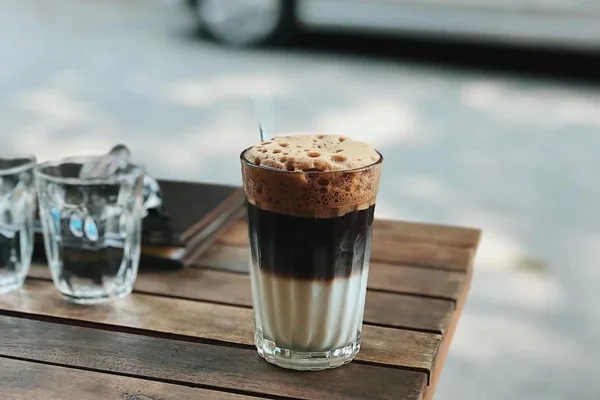

Bạc xỉu là gì? Cách pha bạc xỉu ngon ngất ngây
Bạc xỉu là gì?
Trước đây, bạc xỉu là cách gọi tắt của “bạc tẩy xỉu phé”. Món đồ uống này được pha chế từ các nguyên liệu bao gồm sữa nóng và một chút cà phê. Trong đó, “bạc” là màu trắng, “tẩy” là cái ly, “xỉu” là một chút, “phé” là café.
Nguồn gốc của món bạc xỉu bắt nguồn từ người Hoa, sinh sống ở khu vực Chợ Lớn – Sài Gòn vào khoảng những năm 50 – 60. Người ta thường kết hợp món bạc xỉu nóng với những món ăn sáng. Sữa tươi khi ấy có giá bán rất cao nên phải thêm với nước nóng để bán. Sau này, người ta sáng tạo thêm một chút cafe làm tăng thêm hương thơm và giảm đi mùi sữa đặc nóng. Cho tới hiện tại, món bạc xỉu vẫn hấp dẫn và có thể chấm với bánh quẩy, bánh tiêu…
Cách pha bạc xỉu ngon
Pha một ly bạc xỉu không hề khó. Chỉ với vài bước đơn giản dưới đây, bạn sẽ có ngay một ly bạc xỉu đá vô cùng thơm ngon.
Nguyên liệu làm bạc xỉu đá
- Bột cafe: 20gr
- Sữa tươi: 80ml
- Sữa đặc: 40ml
- Đá bào
- Dụng cụ: phin cafe, muỗng, ly thủy tinh, dụng cụ tạo bọt
Cách làm bạc xỉu đá
- Bước 1: Dùng nước sôi tráng sơ phin cafe cho sạch. Sau đó, cho bột cafe vào phin rồi rót một ít nước sôi để làm ướt bột. Tiếp theo nắp gài nén nhẹ bột cà phê xuống để chúng kết dính lại với nhau và chiết xuất đều, không bị nghẽn. Sau đó gạt bỏ phần café thừa ở dưới đáy phin. Tiếp theo, rót thêm nước sôi vào đầy phin pha cà phê rồi đậy nắp lại và đợi cà phê nhỏ giọt xuống dưới.
- Bước 2: Pha chế sữa tươi bằng cách cho 40ml sữa đặc vào ly. Sau đó thêm nước sôi để làm loãng và dùng muỗng khuấy đều. Sau đó thêm vào ly.
- Bước 3: Làm bạc xỉu sủi bọt bằng cách lấy dụng cụ đong khoảng 10ml nước cốt cafe bạn vừa mới tách. Sau đó, dùng cây tạo bọt cà phê bằng tay. Bạn có thể mua dụng cụ này tại các siêu thị, cửa hàng tạp hóa. Sau đó đánh nhẹ vào nước cốt cafe để tạo bọt bồng bềnh bên trên.
- Bước 4: Cuối cùng thì hãy rót hỗn hợp vừa tạo bọt vào ly sữa đã hoàn thiện tại bước 2. Sau đó thêm chút đá bào, khuấy đều và vớt bọt trang trí trên bề mặt cốc và thưởng thức thôi!
Nếu bạn muốn làm món bạc xỉu 3 tầng thì hãy dựa trên những hướng dẫn ở trên. Chỉ khác là ở bước thứ 3, hãy sử dụng chiếc ly thủy tinh cao, rót sữa đặc trước. Sau đó, bạn thêm đá bào đầy 2/3 ly. Cuối cùng là rót sữa tươi vào tạo thành tầng. Đối với nước cốt cafe thì cần đánh bọt, rót nước cốt vào ly và vớt bọt trên bề mặt. Như vậy là bạn đã có một ly bạc xỉu thơm ngon và vô cùng đẹp mắt.
Yêu Cầu Thành Phẩm Của Món Bạc Xỉu là gì?
- Bạc xỉu sử dụng sữa đặc làm tăng vị ngọt nên không được thêm đường cát vào. Vì như thế bạc xỉu sẽ bị ngọt gắt.
- Sữa tươi sử dụng làm bạc xỉu phải là loại thanh trùng hoặc không đường. Nhờ thế mà nó có thể tạo được vị béo tự nhiên.
- Khi uống bạc xỉu đá, bạn nên khuấy đều để cảm nhận được sự hài hòa của cà phê và sữa kết hợp với nhau.
Như vậy, Bạc xỉu là gì? Nó có nguồn gốc từ đâu và cách pha chế như thế nào là chuyên nghiệp? Tất cả câu trả lời đã có trong bài viết bên trên. Hy vọng những thông tin trên sẽ giúp bạn hiểu hơn về món đồ uống quen thuộc này.